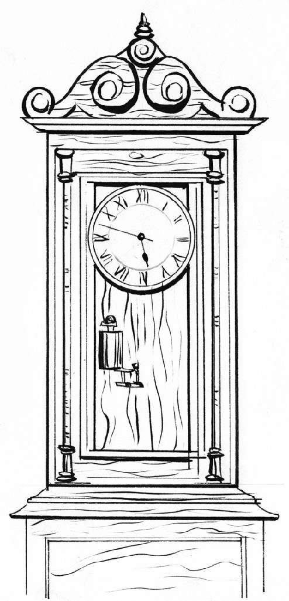

目前所知，运行时间最长的时钟为“贝弗利钟”，位于新西兰奥塔哥大学物理学院的接待处。1864年，这座钟由亚瑟·贝弗利（Arthur Beverly）建造完成，迄今为止人们还从未手动为它上过发条，一次都没有。这座钟堪称“永动钟”，因为它由大气压变化和每日温差来驱动。每日温差会导致一个1立方英尺（约28立方分米）的密闭箱热胀冷缩，从而推动时钟的内隔板。每日温差只要达到6℃就能产生足够压力，从而将一个1磅重的砝码抬高1英寸，砝码因重力下降时就会带动时钟运行。
虽然贝弗利钟从未上过发条，但它中间确实也停过几次。时钟内部的机械装置偶尔会需要清理，走不动时需要维修，有时温差太小又导致驱动力不足，因此而停过几次。
英国牛津大学有一座“牛津电子钟”，又名“克拉伦登干电堆”。“钟”如其名，它是保存在牛津大学克拉伦登图书馆的实验电子钟。这座钟从1840年开始一直响到现在，几乎就是一直在响。为了不让图书馆里的读者被钟声逼疯，牛津电子钟被装在一个由两层隔音玻璃制成的容器内，铃声就几乎听不到了。

从体积和钟面大小来看，世界上最大的时钟是之前提到的“麦加时间”计时器。这座巨型时钟位于麦加皇家钟塔酒店顶部，钟面直径达43米，其所在的钟塔也是世界最高的钟塔（目前是仅次于世界最高建筑迪拜哈利法塔的第二高建筑）。钟塔下方的建筑拥有世界上最大的占地面积，短时间内将很难被超越。
世界上还有另外几个著名的巨型钟面，例如土耳其伊斯坦布尔的西瓦希尔购物中心、匹兹堡杜肯啤酒公司（Duquesne Brewing Company）的时钟（前者钟面直径36米）。著名的伦敦大本钟钟面直径只有6.9米（放6个在麦加时钟的钟面上仍绰绰有余）。
最小的时钟
如今，时钟的定义也越来越宽泛。除电脑屏幕右下角及手机屏幕上会有数字显示外，大多数科技产品上都配有时钟，只是不那么引人注目罢了。
目前，最小的原子钟是由美国国家标准与技术研究院制造的。它于2004年问世，大小跟一个米粒差不多，精度为每3 000年的误差不超过1秒。虽然比瑞士最精准的原子钟——每3 000万年的误差不超过1秒——精度相差十万八千里，但就其大小而言，这个精度已是相当惊人了。